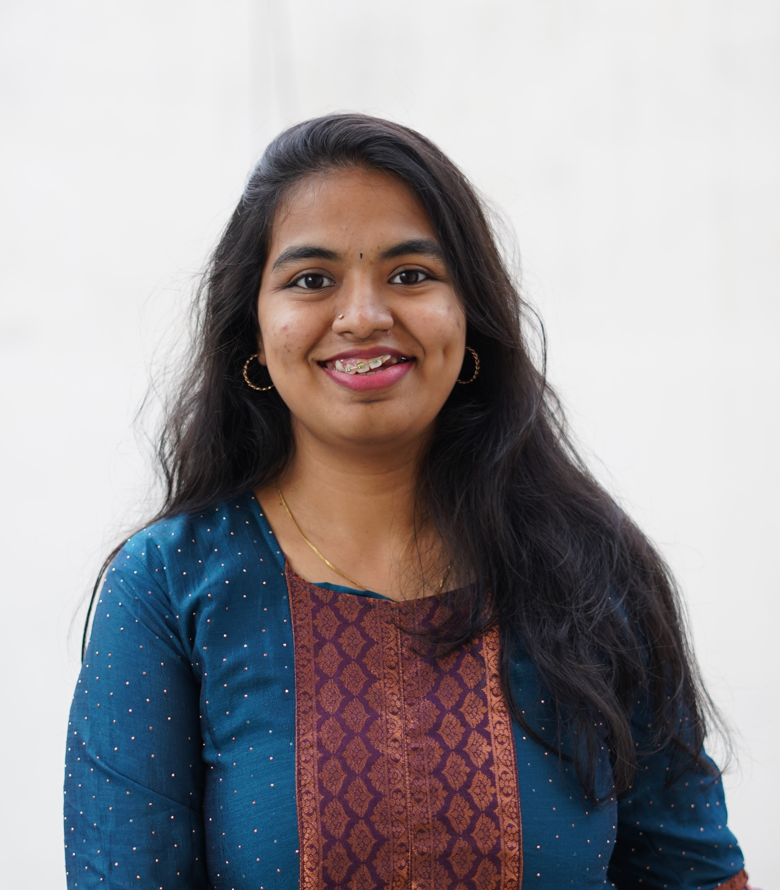

Statistician | Real-World Evidence & Healthcare Analytics
Jayasri S
Data Scientist — RWE
Molecular Connections Analytics, Bengaluru
I am a statistician and healthcare data scientist working in real-world evidence, with an academic background in statistics and biostatistics. My work involves applying statistical and computational methods to observational healthcare data, with interests spanning survival analysis, causal inference, oncology research, and healthcare data standardization.

Updates
Selected academic, professional, and research milestones.
2026
Exploring PhD research opportunities in Real-World Evidence and healthcare analytics.
Dec 2024–Present
Joined Molecular Connections Analytics as a Data Scientist — RWE.
2025
Participated in the CReDO Specialist Statistics Track for biostatisticians.
25–28 Apr 2024
Participated as Faculty in AAZPIRE 2024 at ACTREC.
2024
Participated in CReDO as a Statistical Observer.
3 Feb 2024
Contributed to ISMPOCON 2024 as an Organising Committee member; designed the workshop poster and contributed to keynote-slide preparation.
2023
Completed a six-month internship in the Biostatistics R&D Division at GSK, Bengaluru.
2023
Graduated with a Five-Year Integrated M.Sc. in Statistics from Pondicherry University.
12–14 Dec 2022
Participated in the Industry–Institute Interface Programme and contributed as an Organising Committee member.
2019
Selected for MTUSS, Southern Region, supported by NBHM.